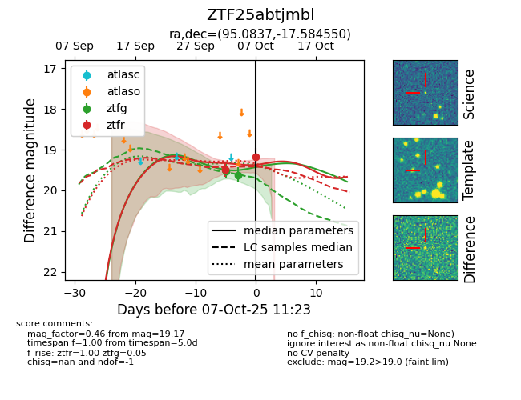
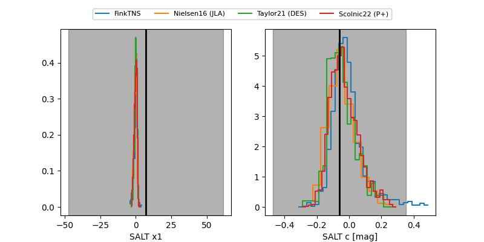

FINK: ZTF25abtjmbl
Lasair: ZTF25abtjmbl
ALeRCE: ZTF25abtjmbl
ZTF25abtjmbl (ztf,fink)
equatorial (ra, dec) = (95.0837,-17.58455)
galactic (l, b) = (225.4709,-14.62815)


last ztfg=19.62, ztfr=19.17
2 ztfg, 2 ztfr detections